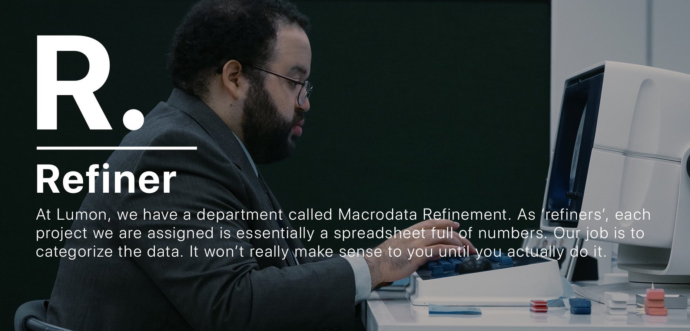
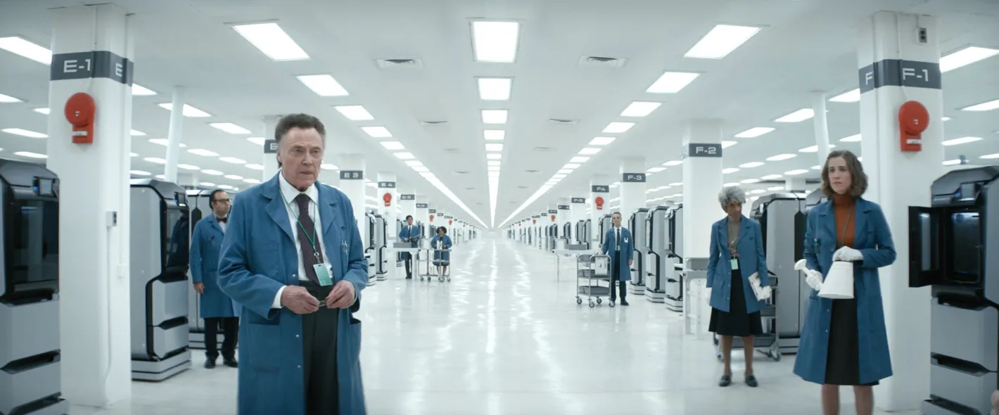

Refinado de macrodatos, piedra angular de Lumon
¿Que es un refinador?
¿Que puedo esperar si accedo a este puesto?
- Ambiente de trabajo acogedor que incentiva la productividad
- Colegas dispuestos a ayudar en todo lo necesario. Se incluye un supervisor/formador para nuevos trabajadores
- Fiestas trimestrales para el refinador con mejores resultados
- El privilegio de ser uno de los trabajadores separados de Lumon Industries
¿Hay otro puesto disponible en estos momentos?
El departamento de modelaje y optica requiere trabajadores actualmente. Para saber mas, venga a las oficinas centrales de Lumon.
